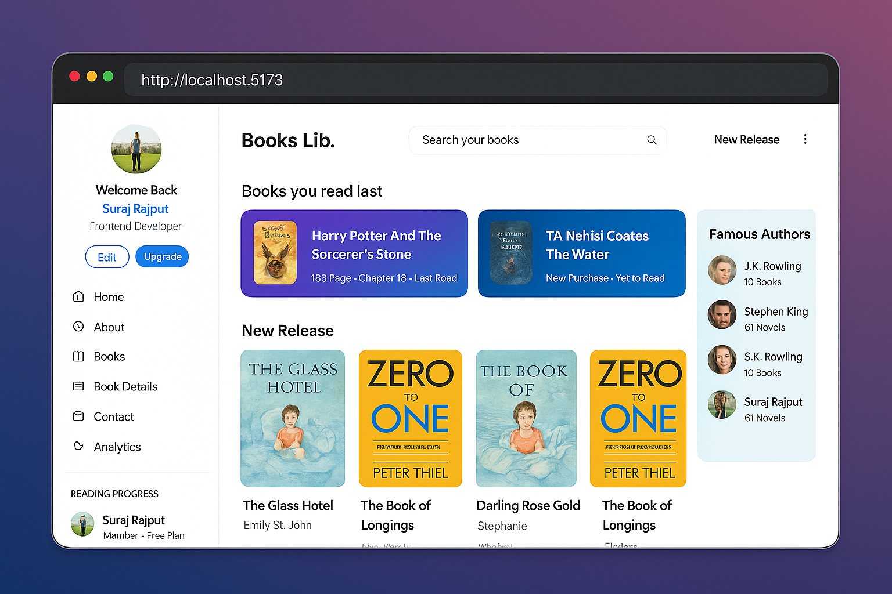

About Me
I am [Your Name], a Bachelor of Computer Applications (BCA) student currently working on my Advance Web Design Practical assignment for 2025/26. This project is a Library Management System built using HTML, Bootstrap, jQuery, and XML. The website is fully responsive and works on both desktop and mobile screens.
Vision
To create a modern and digital library platform where books and resources are accessible anytime, anywhere, for every learner.
Mission
- 📚 Build a responsive and user-friendly library website.
- 🔎 Organize and display books dynamically using XML.
- 🖊️ Provide complete book details (author, type, description, price).
- 📩 Enable easy communication with the library via contact form.